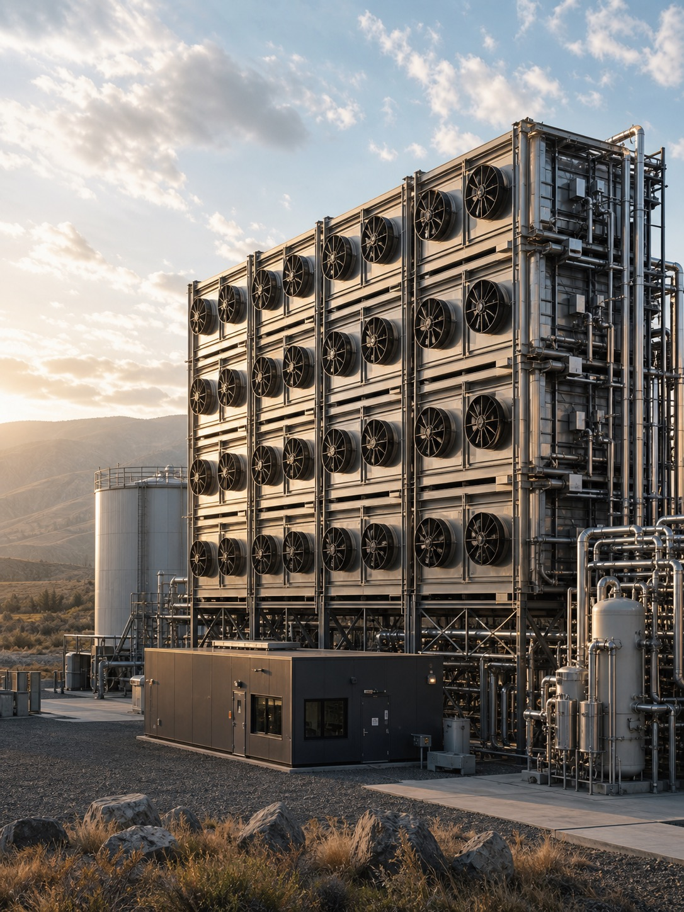

The technology that makes carbon removal work.
CO2SUPPRESSION.COM is available for purchase. One possible direction: a carbon capture and removal technology company deploying direct air capture, bioenergy with carbon capture and storage, enhanced weathering, and ocean alkalinity enhancement at industrial scale to deliver durable, verifiable carbon dioxide removal that meets the permanence standards required by corporate net-zero buyers and national climate commitments.

Technology overview
Three approaches to durable carbon dioxide removal.
01
Direct air capture
Solid and liquid direct air capture systems that extract carbon dioxide directly from ambient air using chemical sorbents, with geological storage or permanent mineralisation to ensure durable removal that does not reverse on any relevant timescale. Direct air capture delivers location-independent carbon removal deployable near low-carbon energy sources rather than constrained by biomass geography or geological formations, enabling scale-up trajectories aligned with the gigaton-per-year removal requirements modelled in IPCC scenarios for limiting warming to 1.5 degrees.
02
Enhanced weathering
Agricultural enhanced weathering programmes that spread crushed basalt and other silicate minerals on farmland to accelerate natural carbon mineralisation processes that sequester CO2 as stable bicarbonate in soil and eventually in ocean water. Enhanced weathering delivers co-benefits including soil pH improvement, crop yield increases, and reduced fertiliser requirements that support farmer adoption without subsidy, creating a carbon removal pathway with direct agricultural value that does not compete with food production for land or water resources.
03
Measurement and verification
Independent carbon removal measurement, reporting, and verification services for carbon dioxide removal projects and portfolios, providing the monitoring rigour and scientific credibility that corporate buyers require to justify durable removal credits in net-zero strategies and that registries require for issuance of high-durability removal certificates. MRV services combine field measurement, remote sensing, geochemical analysis, and lifecycle assessment methodologies to quantify removal with the accuracy and confidence intervals that regulatory and voluntary market standards increasingly require.
CDR
Carbon dioxide removal
B2B
Enterprise and government buyers
Deep
Durable carbon removal focus
.com
Premium TLD
Who this name fits
For climate technologists deploying carbon removal at the scale the atmosphere requires.
Carbon capture technology companies
Climate technology startups and scale-ups in the direct air capture, enhanced weathering, ocean-based removal, and bioenergy with carbon capture segments who need a domain that communicates technical credibility and removal focus without the vague language of offset marketing. CO2Suppression.com uses the scientific vocabulary of the carbon removal field, signalling a technology-forward brand to the climate scientists, engineers, and institutional climate investors who evaluate carbon removal companies on their technical approach and removal durability rather than their marketing.
Industrial emissions reduction
Industrial companies and engineering firms deploying carbon capture and storage at point-source industrial emitters including steel, cement, chemical, and energy production facilities where process emissions cannot be eliminated through electrification or fuel switching alone. CO2Suppression.com supports a brand for industrial decarbonisation services that frames carbon capture as active suppression of emissions rather than passive offsetting, communicating the engineering intensity and operational scale of industrial CCS deployment to the procurement and sustainability teams at heavy industry companies evaluating decarbonisation technology suppliers.
Carbon removal project developers
Carbon removal project developers and portfolio companies operating multiple removal pathways who want a brand that emphasises the outcome rather than any single technology method. CO2Suppression.com works for a company with a diversified removal portfolio spanning both nature-based and technology-based approaches, or for an investment vehicle that finances carbon removal projects across methods and geographies. The domain is credible to the institutional corporate buyers, sovereign wealth funds, and climate-focused family offices that are beginning to procure carbon removal credits at scale under long-term offtake agreements.
The asset is the address
Purchase CO2SUPPRESSION.COM.
Send a note. Offers, partnerships, and serious enquiries are read by the owner directly. Brokers welcome. Confidentiality assumed.
Common questions about co2suppression.com
Is co2suppression.com available for purchase?
co2suppression.com is currently available for purchase. Use the contact form to send an enquiry. Brokers are welcome and confidentiality is assumed on all enquiries.
How do I make an offer on co2suppression.com?
Use the contact form on this page with your offer or message. The owner reads all enquiries personally and responds to serious offers promptly.
Who is selling co2suppression.com?
co2suppression.com is held by a private domain portfolio based in British Columbia, Canada. The domain is available for transfer to any qualified buyer worldwide.